Manuel de wxChecksums 1.2.0
Copyright © 2003-2004 Julien Couot.
http://wxchecksums.sourceforge.net/
Ce programme est libre, vous pouvez le redistribuer et/ou le modifier selon
les termes de la Licence Publique Générale GNU publiée par la Free Software
Foundation (version 2 ou bien toute autre version ultérieure choisie par vous).
Ce programme est distribué car potentiellement utile, mais SANS AUCUNE GARANTIE,
ni explicite ni implicite, y compris les garanties de commercialisation ou d'adaptation
dans un but spécifique. Reportez-vous à la Licence Publique Générale GNU pour
plus de détails.
Vous devez avoir reçu une copie de la Licence Publique Générale GNU en même
temps que ce programme ; si ce n'est pas le cas, écrivez à la Free Software
Foundation, Inc., 59 Temple Place, Suite 330, Boston, MA 02111-1307, États-Unis.
Sommaire
- Introduction
- Installation
- Windows
- Linux
- Utilisation
- Les fichiers de sommes de contrôle
- Gestion des fichiers de sommes
- Vérifier plusieurs fichiers de sommes
- Création fichiers de sommes par lots
- Invoquer wxChecksums depuis la ligne de commande
- Configuration
- Fichiers de configuration
- Préférences de l'utilisateur
- Langues disponibles
- Licence
- Auteur
- Liens
Introduction
wxChecksums est un programme qui calcule et vérifie des sommes
de contrôle1. Cela permet de vérifier
l'intégrité d'un ou plusieurs fichiers.
Il est capable de lire et d'écrire des fichiers au format SFV et MD5 (fichiers
générés par md5sum).
wxChecksums est disponible sous Windows 9x/Me/2000/XP et Linux.
Note : L'expression fichier de sommes désignera fichier
de sommes de contrôle.
Retour au sommaire.
Installation
Windows
Vous pouvez installer wxChecksums de trois façons :
- Avec un programme d'installation qui se chargera d'installer tous les fichiers
nécessaires au fonctionnement du programme, et de créer des icônes dans le
menu démarrer de Windows.
- Depuis une archive au format ZIP. Cette méthode est destinée aux utilisateurs
avancés.
- En compilant les sources. Cette méthode est destinée aux programmeurs,
l'archive contenant les sources contient des indications sur la manière de
compiler wxChecksums.
Note : Si vous utilisez Windows NT, Windows 2000 ou Windows XP
Professionnel, lancez le programme d'installation depuis un compte administrateur
si vous voulez que des icônes dans le menu démarrer soient créées pour tous
les utilisateurs de la machine. Si vous souhaiter créer des icônes dans le menu
démarrer seulement pour vous, lancer le programme d'installation depuis votre
compte.
Note : Une extension pour l'explorateur de Windows est disponible.
Elle vous permet de créer des fichiers sommes directement depuis l'explorateur.
Pour plus d'informations, veuillez consulter le site de wxChecksums
Shell Extension for Microsoft Windows.
Linux
Un paquetage RPM est fourni pour la distribution Mandrake Linux 9.2. Pour les
autres distributions Linux, veuillez compiler le code source en suivant les
instructions données dans le fichier COMPILE.txt.
Retour au sommaire.
Utilisation
Les fichiers de sommes de contrôle
Les fichiers de sommes de contrôle sont des fichiers qui contiennent des informations
permettant de vérifier l'intégrité d'autres fichiers. Il existe différentes
méthodes pour calculer une somme de contrôle.
wxChecksums gère actuellement deux types de fichiers :
- Les fichiers SFV. Ce type de fichier est populaire sous Windows et est lu
et généré par un grand nombre de programmes. L'intégrité des fichiers est
effectuée avec la méthode CRC-32.
- Les fichiers MD5. Ce type de fichier est généré et lu par la commande Unix
md5sum. L'intégrité des fichiers est effectuée avec méthode hachage
unidirectionnel MD5.
Les sommes de contrôle ne peuvent que vérifier l'intégrité des fichiers et
ne peuvent pas les réparer. Si vous souhaitez un outil vous permettant de vérifier
l'intégrité des fichiers et de les réparer, visitez le site de Parchive
(en anglais).
Les fichiers de sommes de contrôle stockent seulement des informations permettant
de vérifier l'intégrité des fichiers, mais en aucun cas les fichiers eux-mêmes.
Noms de fichiers relatifs et absolus
Les noms de fichiers relatifs sont des noms de fichiers donnés par rapport
un répertoire de référence. Les noms de fichiers absolus sont des noms de fichiers
dont le répertoire dans lequel ils se trouvent sont complètement définis.
Exemple :
mon_image.png
..\mes images\mon_image.png
mes images\mon_image.png
sont des noms de fichiers relatifs.C:\Mes documents\Mes images\mon_image.png
D:\Images\mon_image.png
sont des noms de fichiers absolus.
Les noms de fichiers sont stockés en relatif dans les fichiers de sommes. Le
répertoire de référence étant celui où est stocké le fichier de sommes lui-même.
Il est fortement conseillé de sauvegarder le fichier de sommes de contrôle
dans le même répertoire que les fichiers à vérifier.
Gestion des fichiers de sommes
Voici la fenêtre principale de wxChecksums :
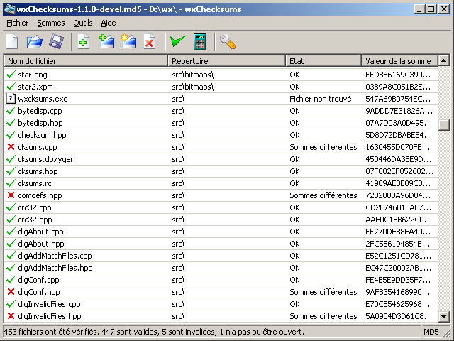
Cette fenêtre se compose :
- D'une barre de menu :
- Le menu Fichier contient les commandes vous permettant de créer,
d'ouvrir, d'enregistrer et de fermer des fichiers de sommes. Il permet
aussi de quitter l'application.
- Le menu Sommes contient les commandes de gestion des sommes de
contrôles : ajout, suppression, vérification.
- Le menu Paramètres vous permet de configurer wxChecksums.
- Le menu Aide vous permet d'obtenir des informations sur wxChecksums.
- D'une barre d'outils.
- De la liste des fichiers présents dans le fichier de sommes de contrôle.
Cette liste contient :
- Une icône indiquant l'état du fichier :
 :
le fichier n'a pas été vérifié.
:
le fichier n'a pas été vérifié. :
la somme de contrôle calculée correspond à la somme contenue dans
le fichier de sommes de contrôle.
:
la somme de contrôle calculée correspond à la somme contenue dans
le fichier de sommes de contrôle. :
la somme de contrôle calculée ne correspond pas à la somme contenue
dans le fichier de sommes de contrôle.
:
la somme de contrôle calculée ne correspond pas à la somme contenue
dans le fichier de sommes de contrôle. :
le fichier n'a pas pu être trouvé ou lu.
:
le fichier n'a pas pu être trouvé ou lu.
- Le nom du fichier.
- Le répertoire où se trouve le fichier.
- La valeur de la somme de contrôle contenue dans le fichier de sommes
de contrôle.
- Des informations sur l'état du fichier.
- Une barre d'état.
Création d'un fichier de sommes
La création d'un fichier se fait par le menu Fichier > Nouveau...
ou par l'outil  .
.
Choisissez le type et le nom du nouveau fichier de sommes dans la boîte de
dialogue suivante :
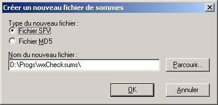
Le bouton Parcourir... vous permet de choisir un nom de fichier par
l'intermédiaire d'une boîte de dialogue classique :
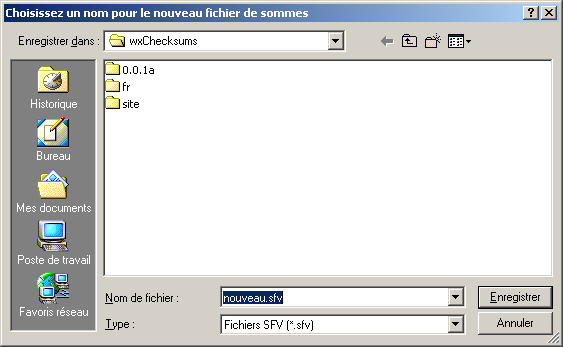
Ouverture d'un fichier de sommes
L'ouverture d'un fichier de sommes peut se faire de deux façons :
- Par le menu Fichier > Ouvrir... ou par l'outil
 .
.
- Si aucun fichier de sommes n'est ouvert, en glissant un fichier de sommes
depuis l'explorateur.
Enregistrement du fichier de sommes
Quand un fichier de sommes a été modifié, vous pouvez l'enregistrer par la
commande Fichier > Enregistrer ou par l'outil  .
.
Pour enregistrer le fichier de sommes sous un autre nom, utilisez la commande
Fichier > Enregistrer sous....
Fermeture du fichier de sommes
Utilisez la commande Fichier > Fermer.
Ajout de fichiers dans le fichier de sommes
L'ajout de fichiers dans le fichier de sommes peut se faire de quatre façons :
- Si un fichier de sommes est ouvert, en glissant des fichiers et/ou des répertoires
depuis l'explorateur.
- Par la commande Sommes > Ajouter des fichiers... ou par l'outil
 .
Une boîte de dialogue vous permet de choisir un ou plusieurs fichiers à ajouter :
.
Une boîte de dialogue vous permet de choisir un ou plusieurs fichiers à ajouter :
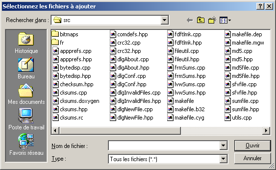
- Par la commande Sommes > Ajouter des répertoires... ou par l'outil
 .
Une boîte de dialogue vous permet de choisir le répertoire à ajouter :
.
Une boîte de dialogue vous permet de choisir le répertoire à ajouter :
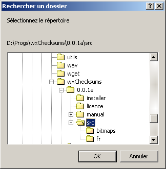
- Par la commande Sommes > Ajouter des fichiers depuis un filtre...
ou par l'outil
 .
Une boîte de dialogue vous permet de saisir les filtres sur les fichiers à
ajouter :
.
Une boîte de dialogue vous permet de saisir les filtres sur les fichiers à
ajouter :
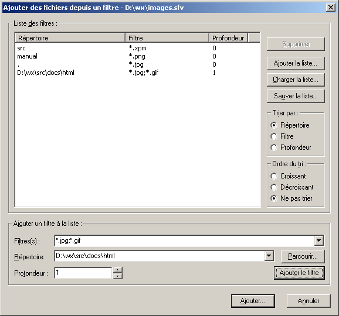
Le champ Filtre(s) vous permet d'indiquer
quels fichiers vous voulez ajouter en utilisant des caractères de substitution.
Le caractère * remplace une suite de caractères et le caractère
? remplace un seul caractère. Vous pouvez spécifier plusieurs
filtres en les séparant par le caractère ;.
Par exemple si vous voulez sélectionner tous les fichiers au format bmp
qui commencent par Anniversaire, le filtre sera : Anniversaire*.bmp.
Si vous voulez sélectionner tous les fichiers dont l'extension finit par
pp, le filtre sera *.?pp. Si vous souhaitez sélectionner
tous les fichiers d'extension cpp et h, le filtre sera :
*.cpp;*.h.
Le champ Répertoire permet d'indiquer à partir de quel répertoire
commencer la recheche. Ce répertoire peut être absolu ou relatif au répertoire
dans lequel se trouve le fichier de sommes auquel les fichiers vont être
ajoutés. Dans la capture d'écran ci-dessus, le filtre *.xpm
va être recherché dans le répertoire D:\wx\src puisque le fichier
de sommes dans lequels ces fichiers vont être ajoutés est D:\wx\src\images.sfv
(le nom du fichier est indiqué dans la barre de titre du dialogue).
Le champ Profondeur indique le niveau de récursivité jusque auquel
les fichiers doivent être recherchés depuis le répertoire spécifié. 0
signifie qu'il n'y a pas de limite, 1 de rechercher seulement
dans le répertoire indiqué, 2 de rechercher dans le répertoire
indiqué et ses sous-répertoires directs, etc...
Dans la capture d'écran ci-dessus, les fichiers XPM seront recherchés et
ajoutés depuis le répertoire D:\wx\src, les fichiers PNG depuis
le répertoire D:\wx\manual, les fichiers JPEG depuis le répertoire
D:\wx, les fichiers GIF dans le répertoire D:\wx\src\docs\html
(et pas dans ses sous-répertoires puisque la limite de profondeur a été
fixée à 1). Notez que les fichiers JPEG seront recherchés dans les sous-répertoires
de D:\wx\src\docs\html car D:\wx\src\docs\html
est un sous-répertoire de D:\wx et qu'il n'y a pas de limite
de profondeur sur le filtre en troisième position.
Il est possible de sauvegarder et recharger la liste des filtres en utilisant
les boutons Ajouter la liste, Charger la liste et Sauver
la liste. Ajouter la liste charge la liste des filtres et l'ajoute
aux filtres déjà existants, alors que Charger la liste supprime d'abord
les filtres existants avant d'ajouter les filtres chargés.
Note : si un fichier est déjà présent dans le fichier de sommes,
il n'est pas ajouté.
Retirer des fichiers du fichier de sommes
Pour retirer des fichiers du fichier de sommes, utilisez la commande Sommes
> Supprimer. Les fichiers sont supprimés du fichiers de sommes de contrôle
mais pas du disque.
Vérification des fichiers
Pour vérifier l'intégrité des fichiers, utilisez la commande Sommes >
Vérifier ou l'outil  .
Si aucun fichier n'est sélectionné tous les fichiers seront vérifiés.
.
Si aucun fichier n'est sélectionné tous les fichiers seront vérifiés.
Recalculer la somme de contrôle des fichiers
Pour recalculer la somme de contrôle des fichiers, utilisez la commande Sommes
> Recalculer ou l'outil  .
Les sommes de contrôles seront recalculées seulement pour les fichiers sélectionnés.
.
Les sommes de contrôles seront recalculées seulement pour les fichiers sélectionnés.
Vérifier plusieurs fichiers de sommes
Il est possible de vérifier plusieurs fichiers de sommes de contrôle simultanément,
par la commande Outils > Vérifier plusieurs fichiers de sommes....
Un premier dialogue vous permet de choisir les fichiers à vérifier :
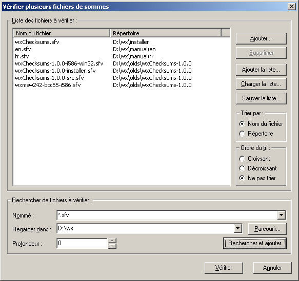
Ce dialogue fonctionne de la même façon que celui d'ajout
de fichiers à partir de filtres, à la différence que le bouton Rechercher
et ajouter lance immédiatement la recherche des fichiers et que vous ne
pouvez spécifier que des noms de répertoires en absolu.
Une fois les fichiers de sommes de contrôle choisis, le dialogue d'avancement
suivant s'affiche :
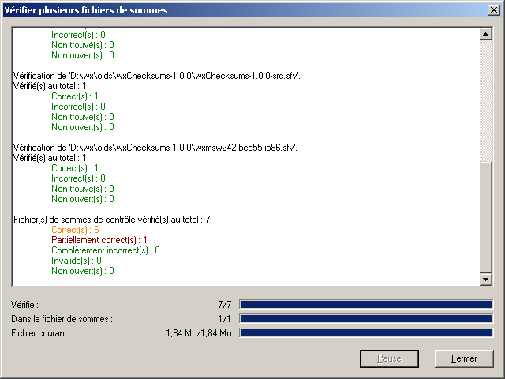
Les informations affichées peuvent être paramétrées dans la section Vérification
multiple de la boîte de dialogue de configuration.
Création de fichiers de sommes par lots
La création de fichiers de sommes par lots vous permet de créer un ou plusieurs
types de fichiers de sommes par fichier que vous avez précédemment sélectionné.
Elle est accessible par la commande Outils > Création de fichiers de sommes
par lots....
Un premier dialogue vous permet de choisir les fichiers à partir desquels les
fichiers de sommes seront créés :
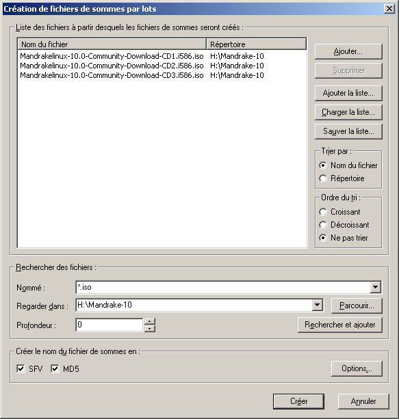
Ce dialogue fonctionne de la même façon que celui d'ajout
de fichiers à partir de filtres, à la différence que le bouton Rechercher
et ajouter lance immédiatement la recherche des fichiers et que vous ne
pouvez spécifier que des noms de répertoires en absolu.
Sélectionnez au moins un type de fichier de sommes à créer pour chaque fichier
sélectionné.
Le bouton Options... vous permet de changer temporairement (pour la
création par lots en cours) les options de création de fichiers de sommes par
lots définies par défaut dans le dialogue de
configuration :
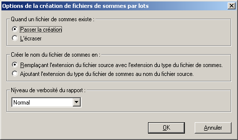
Pour plus d'informations sur ces paramètres, veuillez vous référer à la section
Création par lots du dialogue de configuration.
Une fois les fichiers à traiter choisis, le dialogue d'avancement suivant s'affiche :
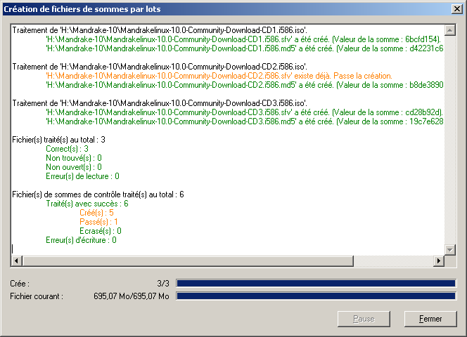
Invoquer wxChecksums depuis la ligne de commande
La forme générale de la ligne de commande acceptée par wxChecksums est :
wxcksums [-h] [-V] [-v] [-a str] [-c str] [-ct str] [-fl str] [--delete-temp-list]
[fichier(s)...]
Notez que les noms de fichiers avec des jokers ('*' and '?')
ne sont pas traités.
Voici un tableau récapitulant les options que wxChecksums accepte :
| Nom de l'option longue |
Nom de l'option courte |
Type |
Ne peut être utilisée avec |
Peut être utilisée avec |
Description |
| --help |
-h |
Commutateur |
|
All |
Affiche un message d'aide. |
| --version |
-V |
Commutateur |
|
All |
Affiche la version de wxChecksums. |
| --verify |
-v |
Commutateur |
-a, -c |
-ct (-ct est ignorée), -fl |
Vérifie le fichier de sommes donné en paramètres. Un seul fichier de sommes
peut être spécifié. |
| --append=<str> |
-a str |
Option (chaîne de caractères) |
-c, -v |
-ct, -fl |
Ajoute la liste de fichiers donnée au fichier de sommes donné. Si le fichier
de sommes n'existe pas, il est créé. |
| --create=<str> |
-c str |
Option (chaîne de caractères) |
-a, -v |
-ct, -fl |
Crée le fichier de sommes donné et lui ajoute la liste de fichiers donnée.
Si le fichier de sommes existe, il est écrasé (sans aucun message d'avertissement).
Préférez en général l'option append. |
| --create-type=<str> |
-ct str |
Option (chaîne de caractères) |
|
-a, -c, -v, -fl |
Spécifie le type de fichier de sommes à créer s'il n'existe pas. Si cette
option n'est pas spécifiée, wxChecksums utilise l'extension du fichier de
sommes donné : md5 pour un fichier de sommes MD5; pour
toutes les autres extensions un fichier de sommes SFV est créé. |
| --file-list=<str> |
-fl str |
Option (chaîne de caractères) |
|
-a, -c, -v, -ct |
Spécifie un ou des fichiers qui contiennent des listes de noms de fichiers.
Ces fichiers sont des fichiers texte avec un nom de fichier par ligne. Vous
pouvez spécifier plusieurs listes de fichiers en les séparant par le caractère
'|'. |
| --delete-temp-list |
|
Commutateur |
|
-fl |
Quand vous spécifiez des listes de noms de fichiers avec l'option -fl,
ce commutateur supprime celles qui sont temporaires. Une liste de noms de
fichiers est considérée comme temporaire quand l'extension du fichier qui
contient la liste est l'une des extensions spécifiée par l'entrée Files/TempExts
du fichier de configuration de wxChecksums. Les extensions par défaut sont
tmp et temp. Reportez-vous à la section
Fichier de configuration pour plus d'informations. |
Exemples :
wxcksums -a wxChecksums-x-x-x.md5 wxChecksums-x.x.x
Ajoute au fichier de sommes wxChecksums-x-x-x.md5 les fichiers
qui se trouvent dans le répertoire wxChecksums-x.x.x. Si le fichier
de sommes MD5 wxChecksums-x-x-x.md5 n'existe pas, il est créé.
wxcksums -v C:\Progs\wxChecksums\wxChecksums-x-x-x.sfv
wxcksums -v wxChecksums-x-x-x.sfv
Vérifie le fichier de sommes wxChecksums-x-x-x.sfv.
wxcksums -c wxChecksums.sfv -fl "wxChecksums-1.0.0\wxChecksums-1.0.0.txt|wxChecksums-1.1.0\wxChecksums-1.1.0.tmp"
--delete-temp-list -ct sfv README.txt NEWS.txt
Crée ou écrase le fichier de sommes wxChecksums.sfv, charge les
noms de fichiers contenus dans wxChecksums-1.0.0\wxChecksums-1.0.0.txt
et wxChecksums-1.1.0\wxChecksums-1.1.0.tmp, supprime le fichier
wxChecksums-1.1.0\wxChecksums-1.1.0.tmp, ajoute à wxChecksums.sfv
les fichiers README.txt et NEWS.txt, ajoute à wxChecksums.sfv
les fichiers listés dans wxChecksums-1.0.0\wxChecksums-1.0.0.txt
et wxChecksums-1.1.0\wxChecksums-1.1.0.tmp.
wxcksums "C:\Documents and Settings\My account\My checksums file.txt"
Ouvre C:\Documents and Settings\My account\My checksums file.txt
dans wxChecksums.
Configuration
La boîte de dialogue de configuration de wxChecksums est accessible par la
commande Paramètres > Configurer wxChecksums... ou par l'outil  .
Elle est composée de six pages :
.
Elle est composée de six pages :
- La page Affichage définit toutes les options d'affichage des fenêtres
et des informations fournies par la liste des fichiers.
- La page Comportement définit le comportement de wxChecksums.
- La page Langage définit la langue utilisée par wxChecksums.
- La page Ligne de commande définit le comportement de wxChecksums
quand il est lancé depuis la ligne de commande avec certaines options.
- La page Fichier SFV définit les paramètres de lecture et d'écriture
des fichiers SFV.
- La page Fichier MD5 définit les paramètres de lecture et d'écriture
des fichiers MD5.
- La page Vérification multiple définit les paramètres de la vérification
de multiples fichiers de sommes de contrôle en une seule opération.
Cette boîte de dialogue est redimensionnable et ses dimensions sont sauvegardées
quand vous la validez.
Affichage
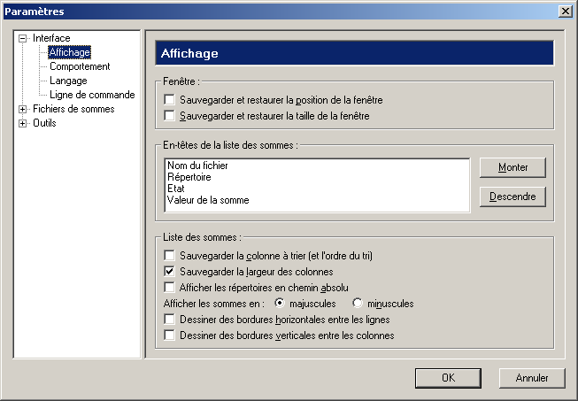
- Sauvegarder et restaurer la position de la fenêtre indique à wxChecksums
de sauvegarder la position de la fenêtre principale en quittant et de la restaurer
au démarrage.
- Sauvegarder et restaurer la taille de la fenêtre indique à wxChecksums
de sauvegarder la taille de la fenêtre principale en quittant et de la restaurer
au démarrage.
- En-tête de la liste des sommes vous permet de changer l'ordre des
colonnes de la liste des sommes de contrôle en sélectionnant une colonne et
en utilisant les boutons Monter et Descendre.
- Sauvegarder la colonne à trier (et l'ordre du tri) indique à wxChecksums
de sauvegarder sur quelle colonne doit s'effectuer le tri, ainsi que l'ordre
du tri en quittant. Ces paramètres sont toujours restaurés au démarrage.
- Sauvegarder la largeur des colonnes indique à wxChecksums de sauvegarder
la taille des colonnes en quittant. La largeur des colonnes est toujours restaurée
au démarrage.
- Afficher les répertoires en chemin absolu affiche les répertoires
des fichiers en mode absolu plutôt qu'en relatif. Ce paramètre n'a pas d'effet
sur le mode d'enregistrement des nom de fichiers dans les fichiers de sommes
de contrôle.
- Afficher les sommes en majuscules/minuscules indique quelle casse
sera utilisée pour afficher les valeurs des sommes de contrôle.
- Dessiner des bordures horizontales (verticales) entre les lignes (colonnes)
permet de dessiner de fines lignes entre les lignes (colonnes). Un redémarrage
de l'application est nécessaire pour que ce paramètre soit pris en compte.
Comportement
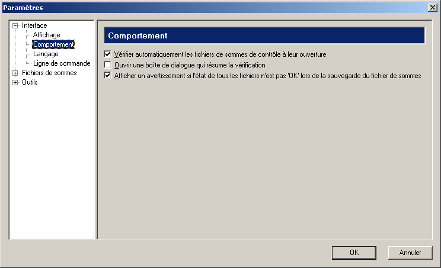
- Vérifier automatiquement les fichiers de sommes de contrôle à leur ouverture
indique à wxChecksums de vérifier tous les fichiers présents dans le fichier
de sommes de contrôle à son ouverture.
- Ouvrir une boîte de dialogue qui résume la vérification. Si cette
option est activée, une boîte de dialogue résumant la vérification sera ouverte
à la fin de chaque vérification (si elle n'a pas été annulée).
- Afficher un avertissement si l'état de tous les fichiers n'est pas 'OK'
lors de la sauvegarde du fichier de sommes. Si cette option est activée,
lorsque vous enregistrez un fichier de sommes et que tous les fichiers n'ont
pas été vérifiés avec succès, une boîte de dialogue vous demande de confirmer
que vous souhaitez enregistrer le fichier de sommes alors que certains fichiers
sont peut-être incorrects :
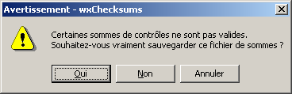
Language
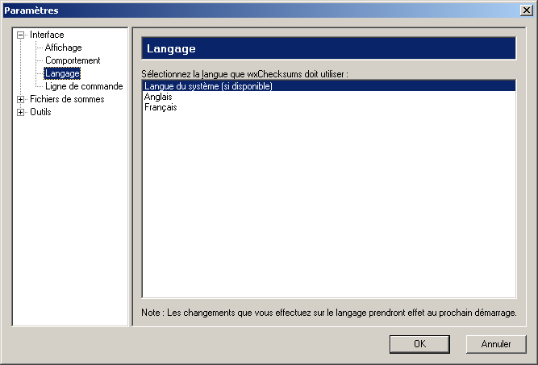
Cet onglet vous permet de choisir la langue que wxChecksums doit utiliser.
L'option Langue du système utilise la même que le système si elle est
disponible, sinon l'anglais est utilisé par défaut.
Ligne de commande
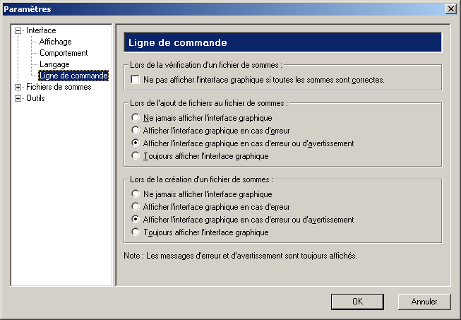
Ces paramètres définissent le comportement de l'interface graphique quand wxChecksums
est invoqué avec certaines options dans la ligne de commande.
Note : Si vous utilisez wxChecksums
Shell Extension for Microsoft Windows, ces paramètres s'appliquent aussi
car cette extension utilise la ligne de commande de wxChecksums pour effectuer
l'action choisie par l'utilisateur.
Si l'option Ne pas afficher l'interface graphique si toutes les sommes sont
correctes est cochée et si vous utilisez le commutateur --verify,
l'interface graphique n'est affichée que si au moins une somme est incorrecte.
Si toutes les sommes sont correctes et si l'option Ouvrir une boîte de dialogue
qui résume la vérification dans la page Comportement n'est pas cochée,
aucun message pour résumer la vérification n'est affiché.
Les options Lors de l'ajout de fichiers au fichier de sommes et Lors
de la création d'un fichier de sommes définissent respectivement quand afficher
l'interface graphique quand les options --append
et --create sont utilisées. Une erreur peut
être par exemple que le fichier de sommes ne peut être sauvegardé. Pour le moment
aucun avertissement ne peut se produire, mais les futures versions de wxChecksums
pourraient en avoir.
Fichiers SFV
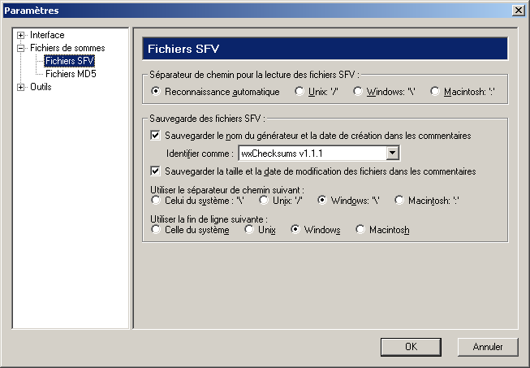
Les paramètres présentés ci-dessus sont les paramètres par défaut. Ils ont
étés définis pour assurer une compatibilité maximale avec les autres logiciels
gérant les fichiers SFV.
- Séparateur de chemin pour la lecture des fichiers SFV permet de forcer
le type de séparateur de chemin à utiliser pour la lecture si la reconnaissance
automatique ne vous donne pas satisfaction.
- Sauvegarder le nom du générateur et la date de création dans les commentaires
ajoute ces informations dans l'en-tête du fichier SFV.
- Identifier comme permet de choisir le nom de l'application qui sera
indiqué comme ayant généré le fichier SFV. L'entrée Personnalisé...
permet de saisir de nouveaux identifiants d'application.
- Sauvegarder la taille et la date de modification des fichiers dans les
commentaires ajoute ces informations dans l'en-tête du fichier SFV.
- Utiliser le séparateur de chemin suivant permet de choisir le séparateur
de chemin à utiliser pour l'écriture des noms de fichiers. Celui du système
est différent selon le système d'exploitation utilisé.
- Utiliser la fin de ligne suivante permet de choisir le type de fichier
texte à utiliser.
Fichiers MD5
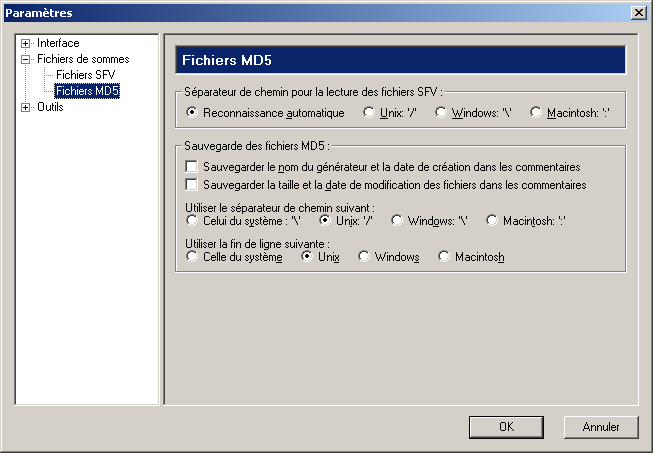
Les paramètres présentés ci-dessus sont les paramètres par défaut. Ils ont
étés définis pour assurer une compatibilité maximale avec md5sum.
- Séparateur de chemin pour la lecture des fichiers MD5 permet de forcer
le type de séparateur de chemin à utiliser pour la lecture si la reconnaissance
automatique ne vous donne pas satisfaction.
- Sauvegarder le nom du générateur et la date de création dans les commentaires
ajoute ces informations dans l'en-tête du fichier MD5.
- Sauvegarder la taille et la date de modification des fichiers dans les
commentaires ajoute ces informations dans l'en-tête du fichier MD5.
- Utiliser le séparateur de chemin suivant permet de choisir le séparateur
de chemin à utiliser pour l'écriture des noms de fichiers. Celui du système
est différent selon le système d'exploitation utilisé.
- Utiliser la fin de ligne suivante permet de choisir le type de fichier
texte à utiliser.
Vérification multiple
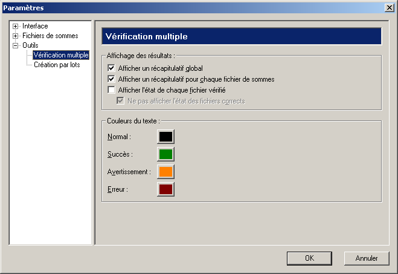
- Afficher un récapitulatif global affiche - si cette option est
activée - un récapitulatif à la fin de la vérification de tous les fichiers
de sommes de contrôle. Ce récapitulatif comprend :
- Le nombre total de fichiers de sommes de contrôle vérifiés.
- Le nombre de fichiers de sommes de contrôle totalement corrects.
- Le nombre de fichiers de sommes de contrôle partiellement corrects (dont
au moins une somme de contrôle est correcte).
- Le nombre de fichiers de sommes de contrôle totalement incorrects.
- Le nombre de fichiers de sommes de contrôle invalides (fichiers dont
le format n'a pas été reconnu comme étant des fichiers de sommes de contrôle).
- Le nombre de fichiers de sommes de contrôle qui n'ont pas pu être ouverts.
Si cette option n'est pas activée, il est juste indiqué si tous les fichiers
de sommes de contrôle sont corrects ou non.
- Afficher un récapitulatif pour chaque fichier de sommes affiche - si
cette option est activée - un récapitulatif à la fin de la vérification
de chaque fichier de sommes de contrôle. Ce récapitulatif comprend :
- Le nombre total de fichiers vérifiés.
- Le nombre de fichiers corrects.
- Le nombre de fichiers incorrects.
- Le nombre de fichiers non trouvés.
- Le nombre de fichiers qui n'ont pu être ouverts.
Si cette option n'est pas activée, il est juste indiqué si tous les fichiers
sont corrects ou non.
- Afficher l'état de chaque fichier vérifié affiche l'état de tous
les fichiers vérifiés (correct, incorrect, non trouvé, n'a pas pu être ouvert).
- Si l'option Afficher l'état de chaque fichier vérifié est activée,
l'option Ne pas afficher l'état des fichiers corrects permet de n'afficher
que les fichiers dont l'état n'est pas correct.
- Les boutons du cadre Couleurs du texte permettent de changer la couleur
de texte utilisé dans le dialogue de vérification
de plusieurs fichiers de sommes de contrôle.
Création par lots
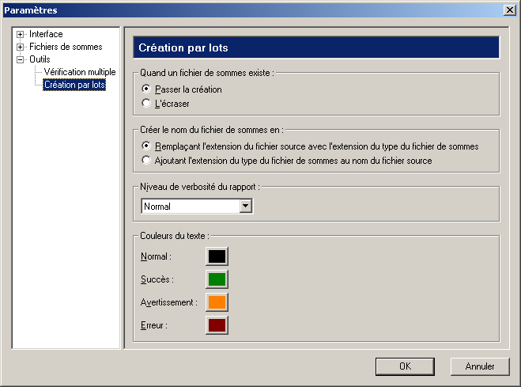
Après le calcul de la (des) somme(s) d'un fichier, wxChecksums essaie d'enregistrer
le(s) fichier(s) de sommes. Le nommage de ces fichiers de sommes peut être changé
dans la section Créer le nom du fichier de sommes en :
- Remplaçant l'extension du fichier source avec l'extension du type du
fichier de sommes va remplacer l'extension du fichier lu pour calculer
la somme avec l'extension du type du fichier de sommmes enregistré. Par exemple
si vous avez sélectionné un fichier nommé
monfichier.truc et
demandé la création de fichier de sommes SFV et MD5, wxChecksums produira
les fichiers de sommes monfichier.sfv et monfichier.md5.
Si vous avez plusieurs fichiers portant le même nom mais avec des extensions
différentes (par exemple truc.html et truc.sxw),
n'utilisez pas cette option.
- Ajoutant l'extension du type du fichier de sommes au nom du fichier source
va ajouter l'extension du type du fichier de sommes enregistré au nom du fichier
lu pour calculer la somme. Par exemple si vous avez sélectionné un fichier
nommé
monfichier.truc et demandé la création de fichier de sommes
SFV et MD5, wxChecksums produira les fichiers de sommes monfichier.truc.sfv
et monfichier.truc.md5.
Quand wxChecksums essaie d'enregistrer un fichier de sommes, si le fichier
de sommes existe déjà, vous pouvez demander à wxChecksums de :
- Passer la création du fichier de sommes en sélectionnant l'option Passer
la création. C'est le paramétrage recommandé.
- Ecraser le fichier de sommes existant en sélectionnant l'option L'écraser.
Veuillez être certain de comprendre exactement ce que fait la création
de fichiers de sommes par lots avant d'utiliser cette option. Une utilisation
incorrecte de cette option peut écraser des fichiers que vous souhaitiez garder.
Vous ne devriez jamais utiliser les options L'écraser et Remplaçant
l'extension du fichier source avec l'extension du type du fichier de sommes
en même temps (particulièrement quand vous sélectionnez des fichiers de sommes
dans le dialogue de sélection de fichiers). Veuillez noter que wxChecksums
ne demande pas de confirmation avant d'écraser un fichier pendant
le processus de création de fichiers de sommes par lots.
Le niveau de verbosité permet de choisir le volume d'informations affichées
dans le dialogue de progression :
| Erreurs seulement |
N'affiche que les erreurs. |
| Erreurs et avertissements |
N'affiche que les erreurs et les avertissements. |
| Normal |
Affiche tous les messages utiles. |
| Bavard |
Affiche des informations supplémentaires (comme les valeurs des sommes
de contrôle calculées). |
Les boutons du cadre Couleurs du texte permettent de changer la couleur
de texte utilisé dans le dialogue de création de
fichiers de sommes par lots.
Retour au sommaire.
Fichiers de configuration
Préférences de l'utilisateur
- Sous Windows, le fichier de configuration se trouve dans le répertoire
%APPDATA%\wxChecksums
et se nomme wxChecksums.ini.
- Sous Linux, le fichier de configuration se trouve dans le répertoire
$HOME/wxChecksums
et se nomme wxChecksums.ini.
wxChecksums.ini est un fichier texte éditable avec un éditeur
de texte.
Voici la descrition des entrées :
| Clé |
Type |
Valeurs |
Description |
GUI/ConfigDlg/WindowSize |
int,int |
|
Taille de la fenêtre du dialogue de configuration. |
GUI/ConfigDlg/SashPosition |
int |
|
Position du séparateur entre l'arbre de sélection des préférences et les
panneaux de préférence. |
GUI/Main/SaveWindowPosition |
bool |
|
Sauvegarder et restaurer la position de la fenêtre principale. |
GUI/Main/SaveWindowSize |
bool |
|
Sauvegarder et restaurer la taille de la fenêtre principale. |
GUI/Main/WindowPosition |
int,int |
|
Position de la fenêtre principale. |
GUI/Main/WindowSize |
int,int |
|
Taille de la fenêtre principale. |
GUI/Main/ShowToolbar |
bool |
|
Afficher la barre d'outils. |
GUI/Main/ShowStatusbar |
bool |
|
Afficher la barre d'état. |
GUI/Main/LastDirectory |
string |
|
Dernier répertoire utilisé pour l'ouverture des fichiers de sommes. |
GUI/Main/ChecksumsList/SaveColumnToSort |
bool |
|
Sauvegarder la colonne à tirer (et l'ordre du tri). |
GUI/Main/ChecksumsList/ColumnToSort |
int |
0-3 |
Numéro de la colonne à trier. |
GUI/Main/ChecksumsList/SaveColumnSortOrder |
int |
0-2 |
L'ordre du tri. |
GUI/Main/ChecksumsList/SaveColumnsWidths |
bool |
|
Sauvegarder la largeur des colonnes. |
GUI/Main/ChecksumsList/DirsInAbsolutePath |
bool |
|
Afficher les répertoires en chemin absolu. |
GUI/Main/ChecksumsList/Uppercase |
bool |
|
Afficher les sommes en majuscules (1) ou en minuscules (0). |
GUI/Main/ChecksumsList/HRules |
bool |
|
Dessiner des bordures horizontales entre les lignes. |
GUI/Main/ChecksumsList/VRules |
bool |
|
Dessiner des bordures verticales entre les colonnes. |
GUI/Main/ChecksumsList/ColumnWidthFileName |
int |
1- |
Taille de la colonne des noms de fichier. |
GUI/Main/ChecksumsList/ColumnWidthDirectory |
int |
1- |
Taille de la colonne des chemins des noms de fichier. |
GUI/Main/ChecksumsList/ColumnWidthChecksumValue |
int |
1- |
Taille de la colonne des valeurs des sommes de contrôle. |
GUI/Main/ChecksumsList/ColumnWidthState |
int |
1- |
Taille de la colonne des états de fichier. |
GUI/Main/ChecksumsList/ColumnFirst |
int |
0-3 |
Elément de la première colonne (0 = nom de fichier, 1 = répertoire, 2
= valeur de la somme, 3 = état du fichier). |
GUI/Main/ChecksumsList/ColumnSecond |
int |
0-3 |
Elément de la deuxième colonne. |
GUI/Main/ChecksumsList/ColumnThird |
int |
0-3 |
Elément de la troisième colonne. |
GUI/Main/ChecksumsList/ColumnFourth |
int |
0-3 |
Elément de la quatrième colonne. |
GUI/Main/History/FileXX |
string |
|
Noms de fichiers de sommes de contrôle récemment ouverts. XX
est un entier entre 00 et 16. |
GUI/NewFile/LastDirectory |
string |
|
Dernier répertoire utilisé pour la création d'un nouveau fichier de sommes. |
GUI/NewFile/LastFileType |
int |
1-2 |
Dernier type de fichier de sommes créé (1 = SFV, 2 = MD5). |
GUI/Behavior/AutoCheckOnOpen |
bool |
|
Vérifier automatiquement les fichiers de sommes de contrôle à leur ouverture. |
GUI/Behavior/DlgSumUpCheck |
bool |
|
Ouvrir une boîte de dialogue qui résume la vérification. |
GUI/Behavior/WarnOnInvalidWhenSaving |
bool |
|
Afficher un avertissement si l'état de tous les fichiers n'est pas 'OK'
lors de la sauvegarde du fichier de sommes. |
GUI/CommandLine/DontShowWhenAllCorrect |
bool |
|
Ne pas afficher l'interface graphique quand toutes les sommes sont correctes. |
GUI/CommandLine/AppendShowGUI |
int |
0-3 |
Afficher l'interface graphique quand l'option --append est utilisée
(0 = jamais, 1 = en cas d'erreur, 2 = en cas d'erreur ou d'avertissement,
3 = toujours). |
GUI/CommandLine/CreateShowGUI |
int |
0-3 |
Afficher l'interface graphique quand l'option --create est utilisée
(0 = jamais, 1 = en cas d'erreur, 2 = en cas d'erreur ou d'avertissement,
3 = toujours). |
GUI/AddMatchingFilesDlg/WindowSize |
int,int |
|
Taille de la fenêtre du dialogue d'ajout de fichier à partir de filtres. |
GUI/AddMatchingFilesDlg/LastSaveListDirectory |
string |
|
Nom du dernier répertoire utilisé lors de la sauvegarde de la liste des
filtres. |
GUI/AddMatchingFilesDlg/LastAddListDirectory |
string |
|
Nom du dernier répertoire utilisé lors de l'ajout d'une liste de filtres. |
GUI/AddMatchingFilesDlg/LastLoadListDirectory |
string |
|
Nom du dernier répertoire utilisé lors du chargement d'une liste de filtres. |
GUI/AddMatchingFilesDlg/History/MatchPatternXX |
string |
|
Historique des filtres saisis dans le champ Filtre(s). XX
est un entier entre 00 et 16. |
GUI/AddMatchingFilesDlg/History/DirectoryXX |
string |
|
Historique des répertoires saisis dans le champ Répertoire. XX
est un entier entre 00 et 16. |
GUI/AddMatchingFilesDlg/PatternsList/SortBy |
int |
0-2 |
Trier la liste des filtres par nom de répertoire (0), filtre (1), profondeur
(2). |
GUI/AddMatchingFilesDlg/PatternsList/SortOrder |
int |
0-2 |
Ordre du tri (0 = ascendant, 1 = descendant, 2 = pas de tri). |
GUI/AddMatchingFilesDlg/PatternsList/ColumnWidthDirectory |
int |
|
Taille de la colonne des noms de répertoire. |
GUI/AddMatchingFilesDlg/PatternsList/ColumnWidthPatterns |
int |
|
Taille de la colonne des filtres. |
GUI/AddMatchingFilesDlg/PatternsList/ColumnWidthDepth |
int |
|
Taille de la colonne des profondeurs. |
GUI/MultiCheck/GlobalSummary |
bool |
|
Afficher un récapitulatif global. |
GUI/MultiCheck/ChecksumsFileSummary |
bool |
|
Afficher un récapitulatif pour chaque fichier de sommes. |
GUI/MultiCheck/FileState |
bool |
|
Afficher l'état de chaque fichier vérifié. |
GUI/MultiCheck/NoCorrectFileState |
bool |
|
Ne pas afficher l'état des fichiers corrects. |
GUI/MultiCheck/NormalColour |
int |
|
Couleur du texte normal dans le dialogue de vérification de plusieurs
fichiers de sommes de contrôle. |
GUI/MultiCheck/SuccessColour |
int |
|
Couleur du texte indiquant un succès dans le dialogue de vérification
de plusieurs fichiers de sommes de contrôle. |
GUI/MultiCheck/WarningColour |
int |
|
Couleur du texte indiquant un avertissement dans le dialogue de vérification
de plusieurs fichiers de sommes de contrôle. |
GUI/MultiCheck/ErrorColour |
int |
|
Couleur du texte indiquant une erreur dans le dialogue de vérification
de plusieurs fichiers de sommes de contrôle. |
GUI/MultiCheck/WindowSize |
int,int |
|
Taille de la fenêtre du dialogue de vérification de plusieurs fichiers
de sommes de contrôle. |
GUI/MultiCheckConfigDlg/WindowSize |
string |
|
Taille de la fenêtre du dialogue de sélection des fichiers à vérifier. |
GUI/MultiCheckConfigDlg/LookInBrowseLastDir |
string |
|
Nom du dernier répertoire sélectionné avec la commande Parcourir. |
GUI/MultiCheckConfigDlg/LastSaveListDirectory |
string |
|
Nom du dernier répertoire utilisé lors de la sauvegarde de la liste des
fichiers de sommes de contrôle à vérifier. |
GUI/MultiCheckConfigDlg/LastAddListDirectory |
string |
|
Nom du dernier répertoire utilisé lors de l'ajout d'une liste de fichiers
de sommes de contrôle à vérifier. |
GUI/MultiCheckConfigDlg/LastLoadListDirectory |
string |
|
Nom du dernier répertoire utilisé lors du chargement d'une liste de fichiers
de sommes de contrôle à vérifier. |
GUI/MultiCheckConfigDlg/History/NamedXX |
string |
|
Historique des noms de fichiers ou filtres saisis dans le champ Nommé.
XX est un entier entre 00 et 16. |
GUI/MultiCheckConfigDlg/History/LookInXX |
string |
|
Historique des répertoires saisis dans le champ Regarder dans.
XX est un entier entre 00 et 16. |
GUI/MultiCheckConfigDlg/FilesList/SortBy |
int |
0-1 |
Trier la liste des fichiers de sommes à vérifier par nom de fichier (0)
ou nom de répertoire (1). |
GUI/MultiCheckConfigDlg/FilesList/SortOrder |
int |
0-2 |
Ordre du tri (0 = ascendant, 1 = descendant, 2 = pas de tri). |
GUI/MultiCheckConfigDlg/FilesList/ColumnWidthFileName |
int |
|
Taille de la colonne des noms de fichier. |
GUI/MultiCheckConfigDlg/FilesList/ColumnWidthDirectory |
int |
|
Taille de la colonne des noms de répertoire. |
GUI/BatchCreation/OvrCkFileWhenItExists |
bool |
|
Si vrai (=1) écrase le fichier de sommes quand
il existe dans le processus de création de fichiers de sommes par lots.
Sinon passe la création du fichier de sommes. |
GUI/BatchCreation/ReplaceExtension |
bool |
|
Si vrai (=1) nomme le fichier de sommes créé
en remplaçant l'extension du fichier source avec l'extension du type du
fichier de sommes. Sinon nomme le fichier de sommes créé en ajoutant l'extension
du type du fichier de sommes au nom du fichier source. |
GUI/BatchCreation/VerbosityLevel |
int |
0-3 |
Niveau de verbosité (0 = erreurs seulement, 1 = erreurs et avertissements,
2 = normal, 3 = bavard). |
GUI/BatchCreation/NormalColour |
int |
|
Couleur du texte normal dans le dialogue de création de fichiers de sommes
de contrôle par lots. |
GUI/BatchCreation/SuccessColour |
int |
|
Couleur du texte indiquant un succès dans le dialogue de création de fichiers
de sommes de contrôle par lots. |
GUI/BatchCreation/WarningColour |
int |
|
Couleur du texte indiquant un avertissement dans le dialogue de création
de fichiers de sommes de contrôle par lots. |
GUI/BatchCreation/ErrorColour |
int |
|
Couleur du texte indiquant une erreur dans le dialogue de création de
fichiers de sommes de contrôle par lots. |
GUI/BatchCreation/WindowSize |
int,int |
|
Taille de la fenêtre du dialogue de création de fichiers de sommes de
contrôle par lots. |
GUI/BatchCreationConfigDlg/WindowSize |
string |
|
Taille de la fenêtre du dialogue de sélection des fichiers sur lesquels
la création de fichiers de sommes par lots sera effectuée. |
GUI/BatchCreationConfigDlg/LookInBrowseLastDir |
string |
|
Nom du dernier répertoire sélectionné avec la commande Parcourir. |
GUI/BatchCreationConfigDlg/LastSaveListDirectory |
string |
|
Nom du dernier répertoire utilisé lors de la sauvegarde de la liste des
fichiers sur lesquels la création de fichiers de sommes par lots sera effectuée. |
GUI/BatchCreationConfigDlg/LastAddListDirectory |
string |
|
Nom du dernier répertoire utilisé lors de l'ajout d'une liste de fichiers
sur lesquels la création de fichiers de sommes par lots sera effectuée. |
GUI/BatchCreationConfigDlg/LastLoadListDirectory |
string |
|
Nom du dernier répertoire utilisé lors du chargement d'une liste de fichiers
sur lesquels la création de fichiers de sommes par lots sera effectuée. |
GUI/BatchCreationConfigDlg/History/NamedXX |
string |
|
Historique des noms de fichiers ou filtres saisis dans le champ Nommé.
XX est un entier entre 00 et 16. |
GUI/BatchCreationConfigDlg/History/LookInXX |
string |
|
Historique des répertoires saisis dans le champ Regarder dans.
XX est un entier entre 00 et 16. |
GUI/BatchCreationConfigDlg/FilesList/SortBy |
int |
0-1 |
Trier la liste des fichiers sur lesquels la création de fichiers de sommes
par lots sera effectuée par nom de fichier (0) ou nom de répertoire (1). |
GUI/BatchCreationConfigDlg/FilesList/SortOrder |
int |
0-2 |
Ordre du tri (0 = ascendant, 1 = descendant, 2 = pas de tri). |
GUI/BatchCreationConfigDlg/FilesList/ColumnWidthFileName |
int |
|
Taille de la colonne des noms de fichier. |
GUI/BatchCreationConfigDlg/FilesList/ColumnWidthDirectory |
int |
|
Taille de la colonne des noms de répertoire. |
ChecksumsFiles/SFV/ReadPathSeparator |
int |
|
Séparateur de chemin pour la lecture des fichiers SFV. |
ChecksumsFiles/SFV/WriteGeneratorAndDate |
bool |
|
Sauvegarder le nom du générateur et la date de création dans les commentaires. |
ChecksumsFiles/SFV/WriteFileSizeAndDate |
bool |
|
Sauvegarder la taille et la date de modification des fichiers dans les
commentaires. |
ChecksumsFiles/SFV/WritePathSeparator |
int |
|
Séparateur de chemin en écriture. |
ChecksumsFiles/SFV/WriteEndOfLine |
int |
|
Fin de ligne en écriture. |
ChecksumsFiles/SFV/IdentifyAs/Generator |
string |
|
Nom du générateur actuellement utilisé. S'il est vide, utilise le nom
de l'application. |
ChecksumsFiles/SFV/IdentifyAs/History/IdentifyXX |
string |
|
Historique des noms de générateur saisis. XX est un entier
entre 00 et 16. |
ChecksumsFiles/MD5/ReadPathSeparator |
int |
|
Séparateur de chemin pour la lecture des fichiers MD5. |
ChecksumsFiles/MD5/WriteGeneratorAndDate |
bool |
|
Sauvegarder le nom du générateur et la date de création dans les commentaires. |
ChecksumsFiles/MD5/WriteFileSizeAndDate |
bool |
|
Sauvegarder la taille et la date de modification des fichiers dans les
commentaires. |
ChecksumsFiles/MD5/WritePathSeparator |
int |
|
Séparateur de chemin en écriture. |
ChecksumsFiles/MD5/WriteEndOfLine |
int |
|
Fin de ligne en écriture. |
Engine/ReadBuffer |
int |
1- |
Taille du tampon de lecture des fichiers pour le calcul des sommes de
contrôle. Valeur par défaut : 0xFFFF. |
Language/Name |
string |
en, fr |
Langage de l'interface utilisateur. |
Files/TempExts |
string |
|
Liste d'extensions de fichiers séparées par un espace. wxChecksums considère
que les listes de fichiers données avec l'option --file-list qui
ont une extension présente dans ce paramètre sont des listes de fichiers
temporaires et que ces listes doivent être détruites. La valeur par défaut
est 'tmp temp'. |
Langues disponibles
A partir de la version 1.2.0, wxChecksums utilise un fichier de configuration
pour déterminer quelles sont les langues disponibles. Si wxChecksums ne trouve
pas ce fichier, l'anglais sera la seule langue disponible. Le contenu de ce
fichier ne sera pas décrit dans ce manuel car il intéresse peu l'utilisateur
final.
Sous Windows, wxChecksums recherche ce fichier dans les emplacements suivants :
- Dans le fichier pointé par la variable d'environnement
WXCKSUMS_LANGS_RC.
Cette variable doit contenir un nom de fichier avec son chemin complet, par
exemple C:\Documents and Settings\All Users\Application Data\wxChecksums\langs.ini.
- Dans le répertoire où se trouve le fichier exécutable de wxChecksums. Le
nom du fichier de configuration des langues doit être
languages.ini.
- Dans le répertoire courant. Le nom du fichier de configuration des langues
doit être
languages.ini.
Sous Unix, wxChecksums recherche ce fichier dans les emplacements suivants :
- Dans le fichier pointé par la variable d'environnement
WXCKSUMS_LANGS_RC.
Cette variable doit contenir un nom de fichier avec son chemin complet, par
exemple /home/user/.myConfigFiles/wxChecksums/langs.ini.
/usr/share/wxChecksums/languages.ini/usr/lib/wxChecksums/languages.ini/usr/local/share/wxChecksums/languages.ini/usr/local/lib/wxChecksums/languages.ini- Dans le répertoire courant. Le nom du fichier de configuration des langues
doit être
languages.ini.
Retour au sommaire.
Licence
wxChecksums est publié sous la GNU GENERAL
PUBLIC LICENSE.
Consultez les fichiers LICENSE.txt et gpl.txt
pour plus de détails.
wxChecksums utilise la bibliothèque wxWidgets.
Veuillez consulter son site pour prendre connaissance de sa licence.
Retour au sommaire.
Auteur
Julien Couot <jcouot@users.sourceforge.net>
Retour au sommaire.
Liens
http://wxchecksums.sourceforge.net/
- Site officiel de wxChecksums.
http://www.jrsoftware.org/
- Inno Setup homepage.
http://www.gnu.org/
- Site officiel du projet GNU.
Retour au sommaire.
Notes :
1. Définition d'une somme de contrôle (checksum)
tirée de Wikipedia :
En informatique, les sommes de contrôle sont un moyen simple de contrôler l'intégrité
des données. Elles sont utilisées prinpalement dans le stockage de données et
dans les protocoles réseau.
Le principe est d'ajouter des octets, ou tout ou composant de base dans une
chaîne de données, et de stocker la valeur résultante.
Plus tard, on pourra vérifier grâce à la somme de contrôle que les données
n'ont pas été corrompues en rééffectuant l'opération de calcul, et en vérifiant
(checking) la somme (sum).
Retour au sommaire.